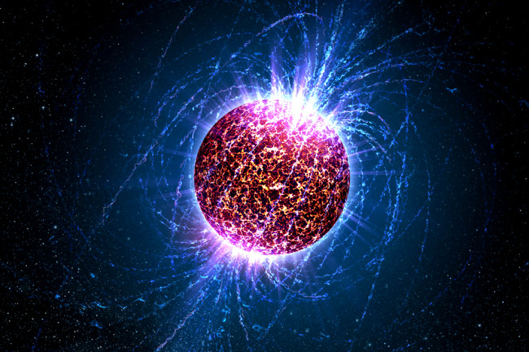
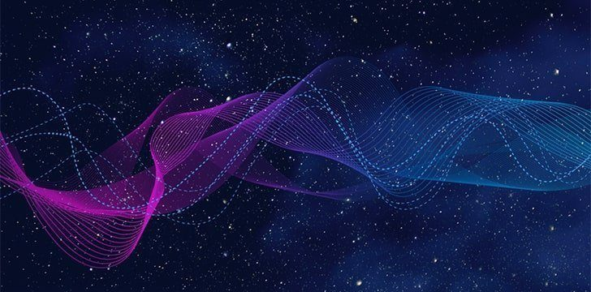
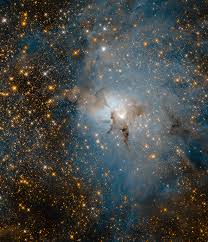
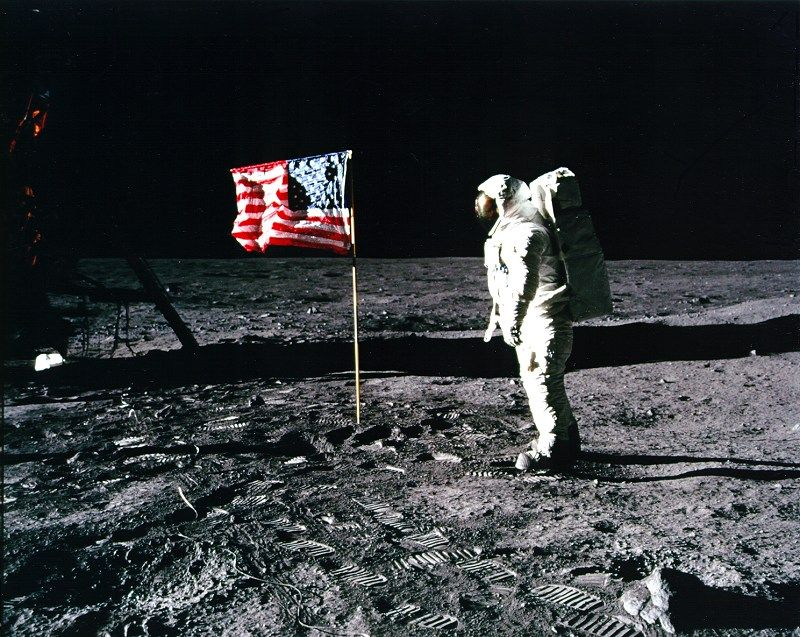

1. Нейтронні зірки можуть обертатися зі швидкістю 600 обертів в секунду
Нейтронні зірки – одна з можливих кінцевих точок еволюції зірок високої маси. Вони народжуються в результаті вибуху супернової зірки, яка згортається, і згодом надзвичайно швидко починає обертатися.
Нейтронні зірки можуть здійснювати до 60 обертів за секунду після народження. За особливих обставин ця швидкість може зрости до понад 600 обертів за секунду.
2. Космос повністю безшумний
Звукові хвилі потребують середовища для подорожі. Оскільки в вакуумі космосу немає атмосфери, царство між зірками завжди буде мовчати.
Світи з атмосферою і тиском повітря дозволяють подорожувати звуку – отже, тому на Землі і, ймовірно, і інших планетах багато шуму. А в космосі його нема.
3. У відомому нам Космосі є незліченна кількість зірок
Ми в основному не маємо уявлення, скільки зірок у Всесвіті. Зараз ми використовуємо приблизну оцінку
кількості зірок у нашій власній галактиці Чумацький Шлях.
Потім ми помножимо це число на здогадку
про
кількість галактик у Всесвіті. Зрештою, NASA може лише впевнено сказати, що там зільйони зірок.
Зільйон – це будь-яка велика незлічена сума.
Дослідження Національного університету Австралії оцінили кількість зірок в 70 сексотів. По-іншому, це 70 000 мільйон- мільйон- мільйонів.
4. Сліди космонавтів корабля “Аполлон” на Місяці, ймовірно, залишаться там щонайменше 100 мільйонів років
Оскільки на Місяці немає атмосфери, немає вітру чи води, які можуть розмити або змити сліди космонавтів корабля “Аполлон”. Це означає, що їх сліди та відбитки космічного корабля та викинуті матеріали залишаться недоторканими на Місяці дуже довго.
Вони не залишаться там назавжди. Місяць все ще динамічне середовище. Насправді його постійно бомбардують “мікрометеорити”, а це означає, що ерозія все ще відбувається на Місяці, просто дуже повільно.
5. 99 відсотків маси нашої Сонячної системи – це сонце
Наша зірка, сонце, настільки щільна, що на неї припадає колосальні 99 відсотків маси всієї нашої Сонячної системи. Ось що дозволяє йому гравітаційно домінувати над усіма планетами.
Технічно наше сонце – це “зірка головної послідовності G-типу”, що означає, що щосекунди вона переплавлює приблизно 600 млн. тонн водню на гелій . Воно також перетворює близько 4 мільйонів тонн речовини в енергію як побічний продукт.
Коли сонце помре, воно стане червоним гігантом і поглине Землю і все довкола. Але не хвилюйтеся: це не відбудеться в найближчі 5 мільярдів років.
6. Більше енергії від сонця потрапляє на Землю щогодини, ніж планета споживає за рік
За останні 15 років використання сонячної енергії зростає зі швидкістю 20 відсотків щороку. Згідно з даними Yale Environment 360, світ почав використовувати на 30 відсотків більше потужності сонячної енергії в 2017 році, тобто 98,9 гігават сонячної енергії було вироблено в тому році.
Незважаючи на, здавалося б, велику кількість, ця кількість енергії становить лише 0,7 відсотка щорічного споживання електроенергії у світі.